LEGADOS
Existem vinte e um Legados que povoam o fantástico mundo de
Auroria, sendo encontrados por todos os continentes, alguns mais
que os outros, mas as fronteiras do mundo são livres, fazendo
com que você consiga em sua jornada conhecer os descendentes
dos Primordiais.
Cada continente possui quatro Legados que acabaram sendo
protagonistas na evolução e desenvolvimento daquele
continente, criando a sua própria cultura, costumes e a
compartilhando com os outros povos daquela região.
╬╬══════════════════════════❮◆❯═════════════════════════╬╬
-HABILIDADES DE LEGADO-
Todo Legado em Gaia: O Prelúdio possui algumas habilidades
que herdam os poderes dos seus Primordiais, trazendo
características únicas daquele povo.
Cada Legado possui habilidades únicas, que demonstram parte
da força herdada por aquele legado. Habilidades de Legado só
podem ser utilizadas uma vez por turno, em um combate.
╬╬══════════════════════════❮◆❯═════════════════════════╬╬
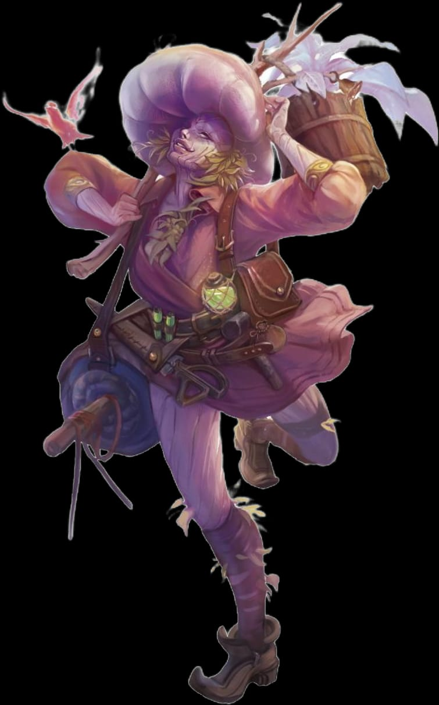
ALRAUNES:
Seres com características físicas únicas, não tendo distinção entre gêneros e sem capacidade de
se reproduzir, com todo seu
corpo feito de plantas e flores em padrões tão vastos como a flora do mundo, moldando-se a flora
local, podendo possuir
espinhos em Krabesh, altos e finos corpos em Drakar ou até mesmo fungos e raízes distorcidas
aqueles criados em Aenolia, ou
outras características referentes à natureza de seu local de amadurecimento, e por conta disto é
quase impossível existir dois
ou mais Alraunes iguais. Suas colorações são vastas e não possuem limites, podem inclusive
refletir sua personalidade ou
estado de espírito. Possuem sua altura entre 1,20m a 2m, podendo viver por tempo indeterminado,
e devido ao seu nascimento
incomum, não podem se reproduzir como outros povos, surgindo no mundo já adultos.
╬╬═════════❮◆❯═════════╬╬
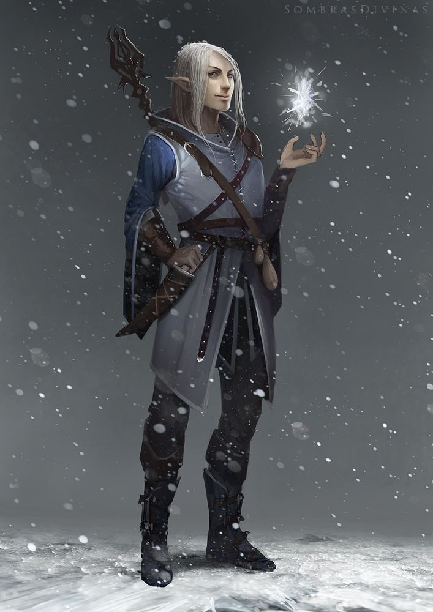
ELFOS:
A obra-prima de Aysla, com rostos afinados, assim como longas e pontiagudas orelhas, os Elfos
possuem uma variedade de
tons de pele do bege ao negro, com cabelos podendo ser qualquer cor. Seus corpos elegantes
variam entre 1,60m a 1,90m de
altura, podendo viver por 300 anos, adquirindo sua independência aos 30 anos.
Talvez pela herança de sua criadora, geralmente são extremamente vaidosos, possuindo forte apego
a seus brasões de família,
símbolo de orgulho e linhagem, louvando a etiqueta e boa educação, onde até o mais pobre plebeu
tende a possuir mais estudo
do que a grande maioria dos cidadãos Aurorianos. Normalmente, apreciam muito a alta costuma com
adornos apropriados,
reservando tatuagens apenas para os exilados.
╬╬═════════❮◆❯═════════╬╬
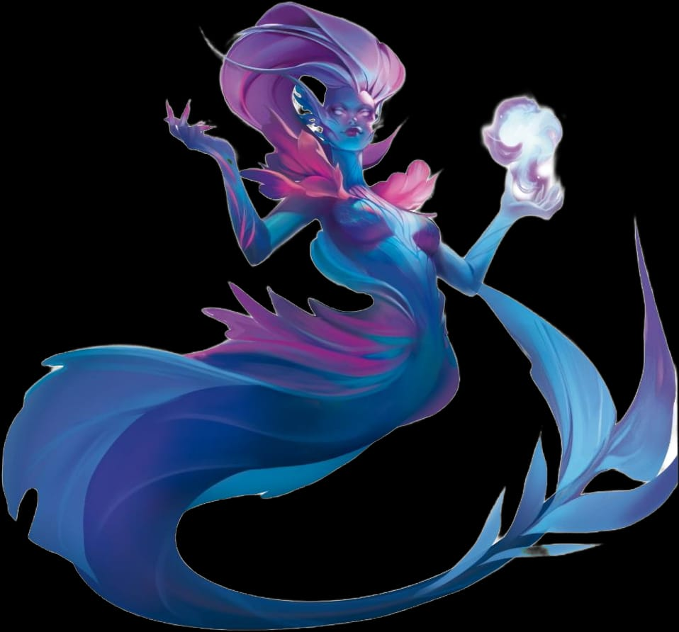
NETUNES:
Seus corpos possuem finas e pequenas escamas que se assemelham à pele humana, possuindo cores
vivas e vibrantes,
podendo ser azuladas ou esverdeadas, mas também apresentando tons amarelados ou avermelhados,
com guelras localizadas
em seus pescoços que se adaptam tanto para a água quanto ao ar e pequenas barbatanas em suas
panturrilhas e antebraços.
Uma vez dentro de rios, lagos ou mares, adaptam suas pernas para formar uma longa e frondosa
cauda, herdando o tom de
suas escamas. Medem em torno de 1,60m até 2m de altura e podem viver até os 170 anos, sendo
considerados aptos ao mundo
aos 16 anos.
╬╬═════════❮◆❯═════════╬╬
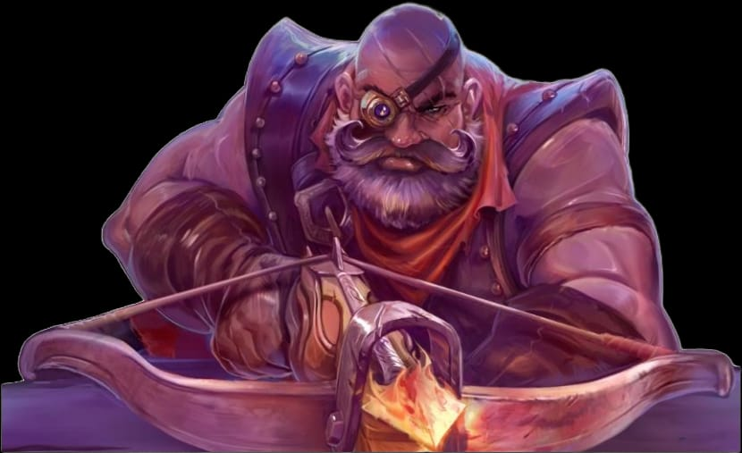
ANÕES:
Teimosos por natureza e rabugentos por opção, os anões possuem corpos pequenos e atarracados,
porém robustos, tendo sua
estrutura muscular avantajada em contraste com sua baixa estatura. Existem três tipos de anões,
organizados em clãs, cada
um oriundo de um de seus ancestrais primordiais; anões do clã Horr, descendentes de Horrgaek, a
Campeã Obsidiana, possui
cabelos negros ou castanhos mesmo em sua idade avançada, aqueles do clã Khor, descendentes de
Khorgrin, o
Sábio das Runas
╬╬═════════❮◆❯═════════╬╬
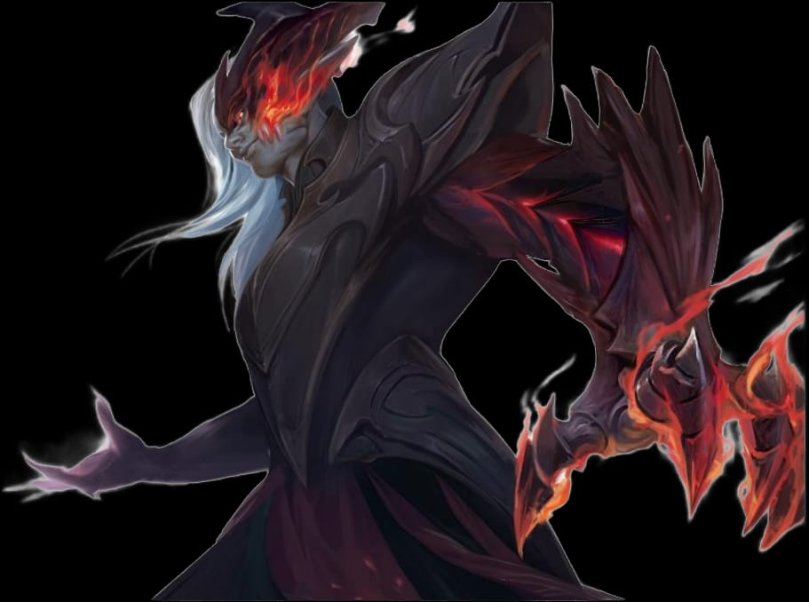
DAEVAS:
Em seu corpo o eterno duelo se manifesta em oposições entre partes mortais e partes abissais. Em
sua parte mortal, sua pele
é acinzentada, arroxeada ou avermelhada com imperfeições e rachaduras assemelhando-se a marcar
de flagelação que surge
desde o nascimento de forma inexplicável e possuindo cabelos negros, ruivos ou brancos. Já sua
parte abissal é uma versão
corrompida e deformada de sua mortal herdando suas cores, onde alguns até podem possuir um único
chifre, pele repuxada,
pupilas em fenda, orelhas alongadas e outras características abissais
╬╬═════════❮◆❯═════════╬╬
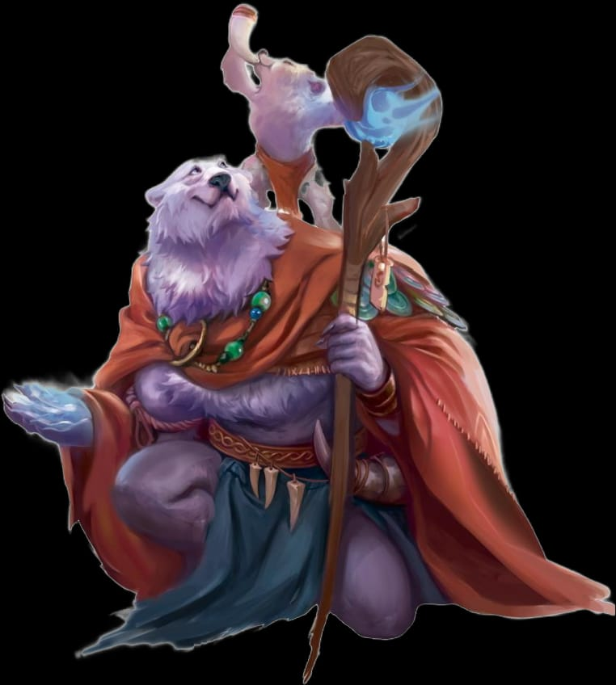
URSARS:
Agarrados em suas esperanças e perseverantes perante as intempéries do mundo, os Ursars vagam
pelo continente congelado
buscando alívio aos corações desamparados, em um grande esforço coletivo de tornar a
sobrevivência mortal suportável.
Grandes ursos humanoides, de pelagem branca como a neve, mas também podendo possuir tons
marrons, negros ou
mesclados, principalmente nas subtribos estabelecidas fora de Drakar. A cor de seus olhos pode
refletir seu estado emocional,
como o vermelho para raiva, amarelos para medo, verdes para coragem, azuis para esperança,
laranjas para inveja, lilás para
amor e ciano para compaixão. Possuem sua altura entre 1,80m e 2,30m, vivendo por 180 anos,
livres para espalhar seus auxílios
com 20 anos.
╬╬═════════❮◆❯═════════╬╬
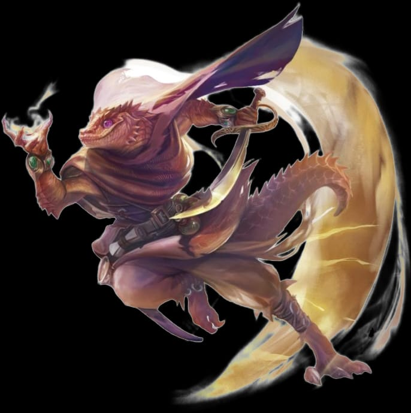
DELAHKS:
“Algo perdido sempre deve ser agraciado com a busca”.
Este é um dos incontáveis ditados dos Delahks, seres reptilianos nascidos das escamas e sorrisos
de sua grande divindade
Pris’ma. De pele escamosa, sempre esboçando um ar suave, este povo vívido possui sua pele que
variam de tons terrosos,
avermelhados, verdes ou cinzas, algumas vezes azuis ou branco, com olhos como joias preciosas,
tão brilhantes quanto seus
espólios. Existe uma pequena diferença entre machos e fêmeas, onde os machos possuem geralmente
pequenos espinhos
salientes adornando seus maxilares, como uma pequena barba para outras raças e as fêmeas com
corpos com linhas mais
sinuosas e longos rabos. Os Delahks não diferem muito em altura quando adultos, variando do
1,50m até 1,80m, vivendo até
seus 70 anos, assumindo tarefas dentro das Famílias aos 15 anos.
╬╬═════════❮◆❯═════════╬╬
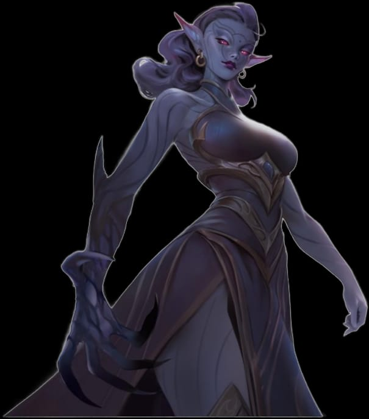
DRAENUNS:
Abraçados pelo manto noturno e resguardando o mundo do desconhecido, estes seres de orelhas
pontudas travam batalhas
silenciosas contra as Criaturas da Noite nas colossais galerias subterrâneas de Nocturnia, em
algum lugar abaixo do
Deserto de Ak’dala. Tendo sua essência tingida pela escuridão e influenciados pelo Domínio
Sombrio, os Draenuns são
ligeiramente apáticos, tendo sua pele escura em tons que variam de roxo, azul e cinza, com
pequenas linhas negras com tom
ônix, que se ligam e criam formas únicas em seus corpos.
╬╬═════════❮◆❯═════════╬╬
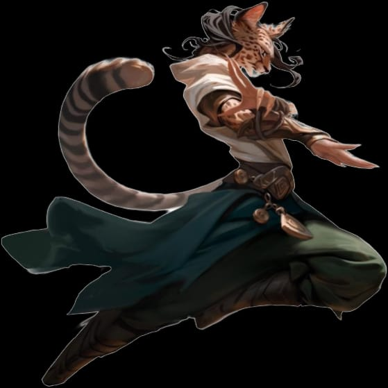
KITARIS:
Soberanos das areias de Ak’dala, fundadores da paradisíaca Ja'zaar, estes felídeos humanoides
guiados pelos ventos da sorte
possuem uma grande variedade de formas, com características felídeas de todos os tipos,
principalmente orelhas felpudas
encurtadas, pelagens rasteiras, ou volumosas em alguns casos, e longas caudas acompanhando sua
pelagem.
Alguns podem apresentar uma espécie de juba que envolve todo o pescoço no caso de Kitaris
masculinos e se limitando à nuca
em Kitaris femininas. O padrão de marcas e pelagem de seu corpo varia entre brancos, pretos,
caramelo, marrom ou cinza,
podendo possuir mesclas, pintas, tons rajados, criando os mais diversos padrões. Quando adultos,
costumam medir entre
1,50m até 2,10m, livres e independentes para desbravar o mundo aos 18 anos, podendo viver até
100 anos.
╬╬═════════❮◆❯═════════╬╬
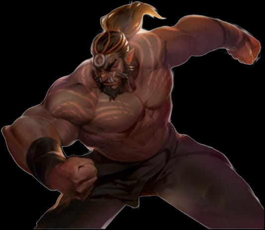
OR’KRASH:
Cultuam aqueles que por muitos foram esquecidos, almejando o poder, a sagacidade, a sabedoria, a
espiritualidade, a
resiliência e a introspecção para enfrentar o mundo e as dificuldades de manter suas tradições
vivas. Grandes e destemidos,
os Or’krashs são orgulhosos e sábios, vivendo em tribos espalhadas pelo deserto de Ak’dala ou em
outros poucos lugares fora
dele. Sua pele possui tons terrosos, variando entre o amarelado, avermelhado ou acinzentado, com
caninos inferiores
protuberantes e ossos largos, marcados pela benção dos seus Primogênitos. Possuem íris variando
do vermelho, dourado ou
alaranjado, como as brasas da fúria dos antigos. Sua altura varia de 1,80m até 2,30m e costumam
viver até seus 180 anos,
recebendo seus totens pessoais aos 18 anos.
╬╬═════════❮◆❯═════════╬╬

INARIS:
Atentos a toda e qualquer menor oscilação do espaço, estes pequenos seres procionídeos possuem
um olhar firme e
possivelmente intimidador, dependendo de seu humor. Sua pelagem varia de tons de branco até o
negro, laranja, marrom ou
vermelho, podendo possuir tons mesclados, possuem também um apreço forte por suas caudas, estas
sendo longas ou curtas,
peludas ou com pelos baixos. Inaris possuem um estilo de vida simples, se apegando apenas ao
necessário, tendo a disciplina
necessária para normalmente não cair nas garras da cobiça. Sua altura não varia tanto quando
adultos, tendo no mínimo 75cm
de altura e um máximo de 1,10m. Podem viver até os 150 anos, recebendo suas primeiras missões
aos 20 anos.
╬╬═════════❮◆❯═════════╬╬
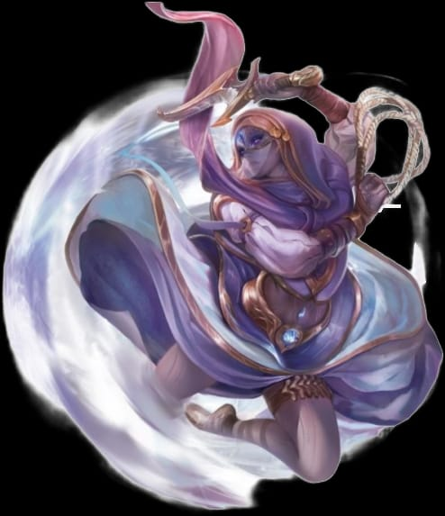
ELEMENTAIS:
Moldados em formas humanoides a partir dos fragmentos do Véu de sua criação, como receptáculos
do Véu Elemental, surgem
no mundo para cumprir um propósito. Podendo possuir pedras preciosas encrustadas em seus corpos
e, dependendo de sua
Essência Elemental, possuem características especificas como visíveis veias de sangue azulado
nos Elementais de Água,
inconsistências e deformações na pele dos Elementais de Fogo, suaves linhas místicas nos
Elementais de Vento,
protuberâncias de pedra nos Elementais da Terra, pele rachada com braços e pernas alongadas nos
Elementais de Trovão ou
a pele alva e cristalina nos Elementais de Gelo. Possuindo a altura entre 1,40m e 2,30m.
Elementais podem viver por tempo
indeterminado, ou até cumprirem seu propósito, e devido ao seu nascimento incomum, não podem se
reproduzir como outros
povos, surgindo no mundo já adultos.
╬╬═════════❮◆❯═════════╬╬